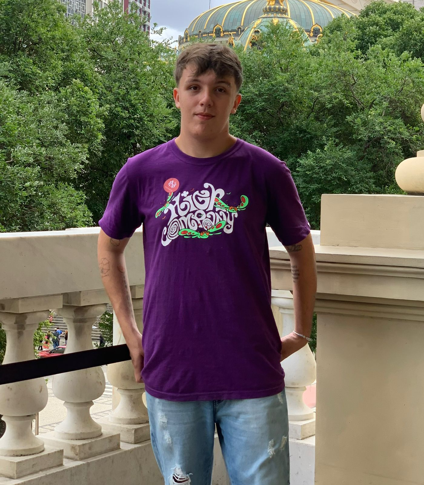

Sobre Mim
Me chamo Aldo Muniz e tenho 21 anos. Sou um estudante de Análise e Desenvolvimento de Sistemas pela UNINTER, mergulhando fundo no mundo da tecnologia e sempre buscando evoluir o meu conhecimento.
Morador de Morungaba, no interior de São Paulo, porém possuo o sonho de se mudar para São Paulo para conseguir construir um futuro na área de TI.
Sou novato na área de programação, e percebo que a cada projeto que vou desenvolvimento é uma oportunidade de aprendizado e crescimento. Apesar dos obstáculos, mantenho-me firme em minha jornada, sabendo que cada desafio me fortalece para os desafios futuros.
Além da programação, possuo alguns outros hobbies e formas de conseguir passar meu tempo livre. Sou um jogador de League of Legends, tendo a campeã Leona como minha MAIN e possuindo uma maestria máxima com a personagem.
A música é uma parte essencial da minha vida, e artistas como Ariana Grande e Jão fazem parte da minha vida desde a minha adolescência e os consumo diaramente. Seja dançando na sala de estar ou relaxando com fones de ouvido, a música sempre me transporta para um lugar de paz e alegria.
Em casa, divido meu espaço com minha mãe, minha irmã e meus dois sobrinhos. Um dos meus sobrinhos possui o Transtorno do Espectro Autista (TEA). Cuidar dele e apoiar minha família é uma prioridade fundamental em minha vida, e encontro grande satisfação em meu trabalho na escola, onde desempenho múltiplos papéis por estar sempre disposto a colaborar, realizando como principal a função de secretaria escolar e funções de Inspetor Escolar, tal qual ajudar as crianças no momento de intervalo e saída.
Em meio a todas as minhas responsabilidades e desafios, mantenho uma determinação inabalável em alcançar meus objetivos e fazer a diferença no mundo. Cada dia é uma oportunidade para aprender, crescer e compartilhar amor e compaixão com aqueles ao meu redor. E com cada passo dado, sei que estou mais perto de realizar meus sonhos e criar um futuro brilhante para mim e para aqueles que amo.
